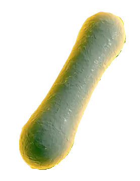
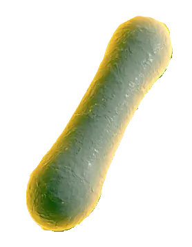

Descripción microbiológica
Corynebacterium diphtheriae es un bacilo grampositivo pleomórfico (0.5-1.0 µm × 1-8 µm), no esporulado, no encapsulado e inmóvil. Presenta disposición en "empalizada" o letras chinas debido a divisiones celulares incompletas. Es aerobio/anaerobio facultativo, catalasa-positivo y oxidasa-negativo. En agar Tellurito forma colonias gris-negras (reducción de telurito) de 1-2 mm tras 48 horas. Las cepas toxigénicas (lisogenizadas por fago β) producen la exotoxina diftérica, su principal factor de virulencia.
Características distintivas
- Tinción: Gram-positivo irregular, gránulos metacromáticos (poli-P) con azul de metileno.
- Metabolismo: Fermenta glucosa y maltosa (no sacarosa), ureasa-negativo.
- Biotipos: gravis (colonias rugosas), mitis (lisas), intermedius (pequeñas).
- Factores de virulencia: Toxina diftérica (tox gen), proteína DtxR (regulación férrica).
Ecología y transmisión
Exclusivo patógeno humano que coloniza nasofaringe y piel. Se transmite por gotículas respiratorias o contacto directo con lesiones cutáneas. Portadores asintomáticos (2-5% poblacional) mantienen la circulación. Brotes se asocian a bajas coberturas vacunales, hacinamiento y pobreza. No sobrevive largo tiempo en fómites. Reservorio animal inexistente. Factores de riesgo incluyen inmunización incompleta y viajes a zonas endémicas.
Factores ambientales
- Supervivencia: 2-6 semanas en secreciones secas, sensible a luz UV y calor (>60°C).
- pH óptimo: 7.2-7.8, no crece a pH <6.0.< /li>
- Biocidas: Sensible a hipoclorito (1%), glutaraldehído al 2%.
Mecanismos de patogenicidad
La toxina diftérica (58 kDa) es responsable de la patología sistémica:
| Componente | Mecanismo | Efecto clínico |
|---|---|---|
| Subunidad B | Unión a receptor HB-EGF | Internalización celular |
| Subunidad A | Inhibición EF-2 (ADP-ribosilación) | Paro síntesis proteica → necrosis |
Enfermedades clínicas
- Difteria respiratoria: Pseudomembrana fibrinosa blanco-grisácea en amígdalas/faringe (sangra al desprender), fiebre, adenopatía "cuello de toro".
- Complicaciones: Miocarditis (día 7-14), neuropatía (semanas 3-7), obstrucción airway.
- Difteria cutánea: Úlceras crónicas cubiertas por membrana, común en trópicos.
- Portadores: Asintomáticos nasofaríngeos (2-6 semanas).
Diagnóstico y tratamiento
Métodos diagnósticos:
- Tinción de Gram/Loeffler (bacilos pleomórficos en "V" o "L").
- Cultivo en agar Tellurito/TCBA + pruebas bioquímicas (ureasa, fermentación).
- PCR para gen tox o prueba de Elek (toxigenicidad).
Manejo terapéutico:
- Antitoxina: Dosis única IV/IM (20,000-100,000 U) sin esperar confirmación.
- Antibióticos: Penicilina G (100,000 U/kg/día) o eritromicina (40 mg/kg/día) por 14 días.
- Aislamiento: Estricto hasta 2 cultivos negativos post-tratamiento.
Prevención y control
- Vacunación: Toxoide diftérico (DTP/Tdap) en esquema primario + refuerzos cada 10 años.
- Quimioprofilaxis: Eritromicina/penicilina para contactos estrechos.
- Vigilancia: Notificación inmediata (enfermedad erradicable).
Datos epidemiológicos
- 7,321 casos globales en 2022 (OMS), principalmente en Yemen, Nigeria y India.
- Mortalidad del 5-10% (hasta 20% en <5 años sin tratamiento).
- Cobertura vacunal global del 86% (DTP3), pero desigual (<55% en algunos países).